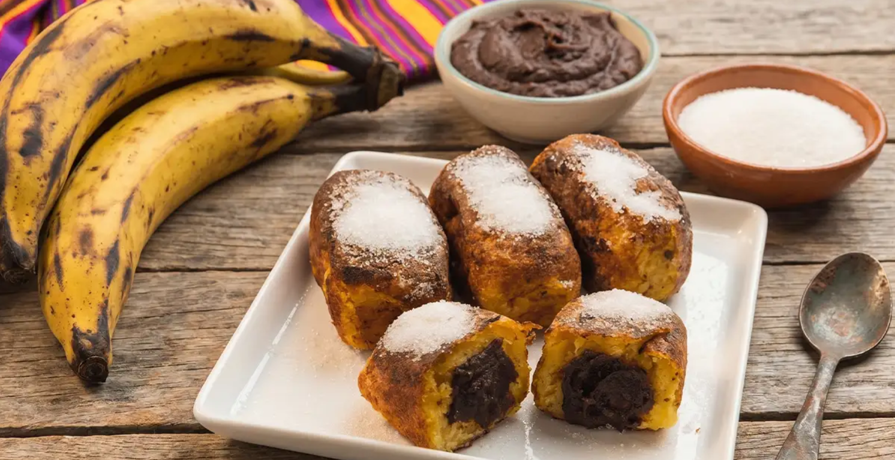
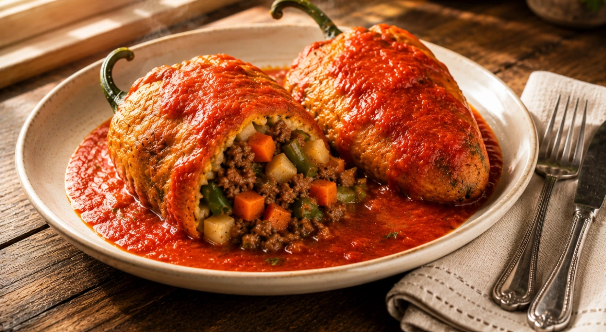
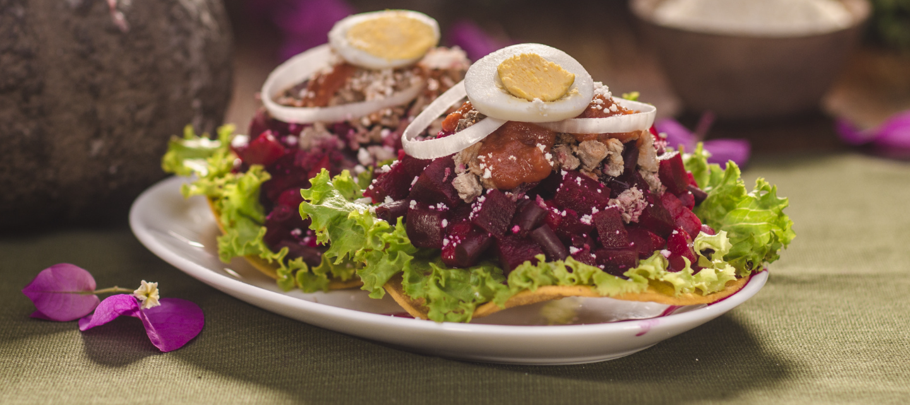

Some of my favorite recipes are the savory dishes I grew up enjoying and still love making today. I like experimenting with different flavors, ingredients, and cooking techniques while creating meals that
are comforting and satisfying. Here are a few of my favorite savory recipes.
Savory Bites
Cooking is one of the ways I enjoy bringing people together. I love
preparing meals that are full of flavor and sharing them with family
and friends. Here are a few savory dishes that I especially enjoy making.
Guatemalan Rellenitos: Sweet, Soft, and Full of Flavor
Rellenitos are one of my favorite Guatemalan treats to make. They are made
with soft mashed plantains filled with mashed black beans and cooked
until golden on the outside. They are warm, comforting, and full of flavor.

Why You'll Love This Recipe
Soft and sweet on the inside
Made with simple ingredients
Full of traditional Guatemalan flavor
Perfect as a snack or dessert
Delicious served warm
Ingredients
For the Plantain Mixture
Ripe plantains
Water
Cinnamon
For the Filling
Refried beans
Onion (optional)
For Cooking
Cooking oil
Extra sugar for topping, if desired
Sour cream, if desired
Instructions
Step 1: Cook the Plantains
Peel and cut the plantains into pieces. Cook them in water until they become
soft and easy to mash.
Step 2: Mash the Plantains
Drain the plantains and mash them until smooth. Add a small amount of
cinnamon if desired.
Step 3: Prepare the Filling
Mash or blend the cooked black beans until the
mixture becomes smooth.
Step 4: Form the Rellenitos
Take a small amount of the plantain mixture and flatten it in your hand.
Add a spoonful of the bean filling to the center.
Step 5: Shape
Carefully close the plantain mixture around the filling and shape it into
a small oval.
Step 6: Cook
Heat cooking oil in a pan and cook the rellenitos until they are golden
brown on all sides.
Step 7: Serve
Serve the rellenitos warm. Drizzle sour cream and sprinkle sugar on top if desired.
Tips for the Perfect Rellenitos
Use ripe plantains so the mixture is naturally sweet.
Make sure the bean filling is thick so it is easier to shape.
Do not overfill the rellenitos.
Shape them gently so the filling stays inside.
Serve them warm for the best texture and flavor.
Guatemalan Chiles Rellenos
Guatemalan Chiles Rellenos are a comforting dish made with roasted peppers
filled with a seasoned mixture of meat and vegetables. The stuffed peppers
are coated in a fluffy egg batter, fried until golden, and served with a
flavorful tomato sauce.

Why You'll Love This Recipe
Filled with a savory meat and vegetable mixture
Covered in a light and fluffy egg coating
Perfect for a homemade family meal
Delicious served with tomato sauce
Ingredients
For the Peppers
Bell peppers or poblano peppers
Cooking oil
Flour for coating
Eggs
For the Filling
Ground beef
Potatoes, diced
Carrots, diced
Green beans, chopped
Onion, chopped
Garlic, minced
Salt and seasonings
For the Tomato Sauce
Tomatoes
Onion
Garlic
Salt and seasonings
Instructions
Step 1: Roast the Peppers
Roast the peppers until the skin becomes blistered. Allow them to cool
slightly, then carefully peel away the skin.
Step 2: Prepare the Peppers
Make a small opening in each pepper and carefully remove the seeds.
Try to keep the peppers whole so they are easier to fill.
Step 3: Prepare the Filling
Cook the ground beef in a pan with the onion and garlic. Add the potatoes,
carrots, and green beans and continue cooking until the vegetables are tender.
Season with salt and your preferred seasonings.
Step 4: Fill the Peppers
Carefully fill each pepper with the cooked meat and vegetable mixture.
Gently close the opening to keep the filling inside.
Step 5: Prepare the Egg Batter
Separate the eggs. Beat the egg whites until they become fluffy and form
soft peaks, then gently mix in the egg yolks.
Step 6: Coat the Peppers
Lightly coat each stuffed pepper with flour and then cover it completely
with the egg mixture.
Step 7: Fry the Peppers
Heat cooking oil in a pan. Carefully fry each pepper until the egg coating
is golden on all sides.
Step 8: Prepare the Tomato Sauce
Cook and blend the tomatoes with onion, garlic, salt, 1 bay leave, and seasonings to
create a smooth tomato sauce.
Step 9: Serve
Serve the Guatemalan Chiles Rellenos warm with the tomato sauce spooned
over the top.
Tips for the Perfect Guatemalan Chiles Rellenos
Be careful when peeling the peppers so they do not tear.
Cut the vegetables into small pieces so the filling stays together.
Do not overfill the peppers or they may open while cooking.
Beat the egg whites until fluffy for a light coating.
Serve them warm with plenty of tomato sauce.
Enchiladas: Guatemalan Style
Guatemalan Enchiladas are a colorful dish made with crispy corn tortillas
topped with seasoned meat, vegetables, beets, lettuce, and other fresh
toppings. They are full of different flavors and textures and are one of
my favorite Guatemalan dishes to enjoy with family.

Why You'll Love This Recipe
Colorful and full of flavor
Made with a variety of fresh ingredients
Includes both crispy and tender textures
Perfect for family gatherings and special occasions
Easy to customize with your favorite toppings
Ingredients
For the Meat Mixture
Ground beef
Potatoes, diced
Carrots, diced
Green beans, chopped
Onion, chopped
Garlic, minced
Salt and seasonings
For the Enchiladas
Corn tortillas
Cooking oil
Shredded lettuce
Cooked beets, sliced or shredded
Hard-boiled eggs, sliced
Sliced onion
Crumbled cheese (Queso Fresco O Seco)
For the Tomato Sauce
Tomatoes
Onion
Garlic
Salt and seasonings
Instructions
Step 1: Prepare the Vegetables
Cook the potatoes, carrots, and green beans until they are tender.
Drain them and set them aside.
Step 2: Cook the Meat
Cook the ground beef with the onion and garlic until the meat is fully
browned. Add the cooked vegetables and season with salt and your preferred
seasonings.
Step 3: Prepare the Beets
Cook the beets until tender. Allow them to cool, then slice or shred
them for the enchilada toppings.
Step 4: Prepare the Tomato Sauce
Cook and blend the tomatoes with onion, garlic, salt, and seasonings
until you have a smooth tomato sauce.
Step 5: Fry the Tortillas
Heat cooking oil in a pan and fry the corn tortillas until they are
golden and crispy. Place them on a plate lined with paper towels to
remove any excess oil. Or you can buy tostadas.
Step 6: Add the Lettuce
Place a layer of shredded lettuce on top of each crispy tortilla.
Step 7: Add the Meat Mixture
Spoon the seasoned meat and vegetable mixture over the lettuce.
Step 8: Add the Toppings
Top each enchilada with beets, sliced hard-boiled egg, onion,
crumbled cheese, and fresh parsley.
Step 9: Add the Sauce
Spoon a small amount of tomato sauce over the top of each enchilada.
Step 10: Serve
Serve the Guatemalan Enchiladas immediately so the tortillas remain
crispy and the toppings stay fresh.
Tips for the Perfect Guatemalan Enchiladas
Prepare all of the toppings before frying the tortillas.
Allow the tortillas to drain after frying so they stay crisp.
Cut the vegetables into small pieces so they are easy to layer.
Assemble the enchiladas shortly before serving.
Add the toppings carefully so each enchilada has a little of everything.